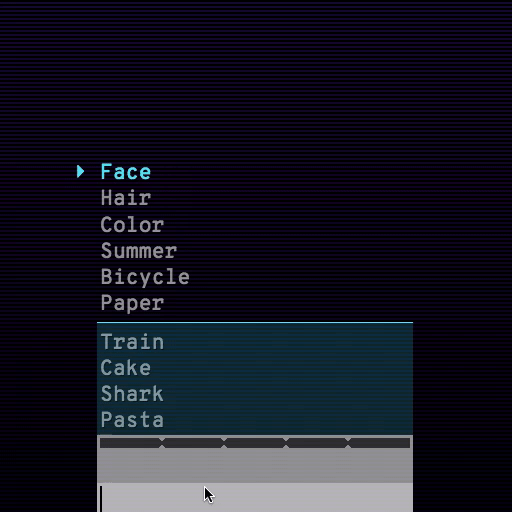
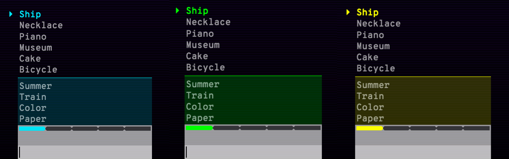
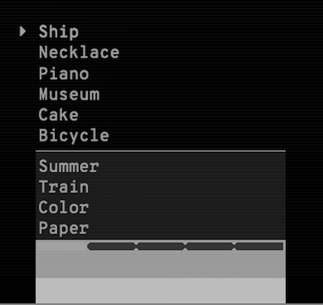
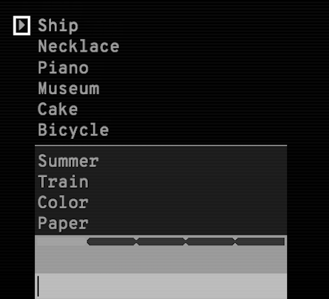

Solving Google Semantris using OpenCV and Word2Vec
Hmm. Looks like you’ve played enough Semantris to reach here.
Semantris is a set of word association games by Google that use semantic search to predict a relevant word in the game based on the player’s input.
There are 2 modes available in the game.
ARCADE
Arcade mode requires the player to come up with associated words for certain words. You are supposed to think and enter as fast as you can before an increasing list of words fills your screen.

BLOCKS
Blocks is a turn-based game mode. You can take your time to come up with different types of clues and see which ones the game understands best.

After playing for a while, I realized both the game modes are using pattern recognition as the main game-play mechanism. And that’s when I started thinking if the game-play can be automated.
TURNS OUT, IT CAN BE AUTOMATED
Semantris-Solver uses the following procedure to play the game:
- Capture the current game state using computer vision techniques
- Identify the word to enter for higher-reward/longer-gameplay
- Find the associated word using word-embeddings
In the following sections, we are going to dive into the working of the Semantris-Solver for both the game modes.
ARCADE
A human player will use the following moves to play the arcade mode:
- Find one or more highlighted words in the game
- Get these words in the highlighted area by entering the associated word for them
- Keep doing this before you run out of space on your screen for new words
Also, there are three types of theme colors in arcade mode.

You will realize that the theme color isn’t playing any role here, the game playing mechanism will remain the same if we change the theme color, what changes is the definition of the highlighted word.
A word is highlighted if it has a pointer shape left to it, “▶ Ship” in this case.
COLOR SPACE CONVERSION
ARCADE mode of Semantris-Solver starts with capturing the screenshot of the laptop screen and converts it into a gray-scale image, agnostic of the actual color.

TEMPLATE MATCHING
Our next step will be to find the highlighted word in the captured image. OpenCV provides a method called Template Matching for searching and finding the location of a template image in a larger image.
We will use a cropped version of the pointer shape (▶) as a template image, to find its location in the captured screen.

OPTICAL CHARACTER RECOGNITION
Based on the pointer’s location, a section is cropped right next to it, with the highlighted word.
The cropped image is converted into text using Tesseract OCR; in this case, it will give us the word Ship.
In the case of more than one highlighted word, they are entered one after another to keep the game moving.
ASSOCIATED WORD SELECTION
Word2Vec pre-trained on Google News corpus is used as a word embedding model to find the most similar words (associated) for a given word.
In this case, it will return the vessel to enter as an associated word for the ship (after removing morphologically similar words). The program will enter this associated word and capture the updated game screen to continue.
BLOCKS
In this mode, there are word-blocks with four possible colors for a given theme, the word-blocks might or might not contain a word in them.
Entering the associated word for a word-block will remove the same colored blocks connected to it, similar to the good old Tetris.
A human player will use the following moves to play the arcade mode:
- Enter the associated word for a word-block, typically connected with maximum same colored word-blocks
- Keep doing this before you run out of space on your screen for new words
You will realize that the color of a word-block is playing a significant role this time. You will have to enter the associated word for a word-block connected with more same colored blocks to score higher points.
On top of this, there are three types of theme colors in blocks mode.
COLOR PALETTE GENERATION
This time we can’t convert the captured image into its gray-scale version. We need to know the color attributes to be able to distinguish between different word-blocks.
Running K-mean clustering on the pixels of the captured screen will give us all the prominent colors in the image after excluding background colors such as white (text-color), black (background-color), and gray (text-input).
CONTOUR DETECTION
Now that we have all the four colors in the current theme, we need to know which word-block to choose to get maximum points.
In other words, if we calculate the area of every connected-word-block-group (word-blocks of the same color connected to each other) and select the one with the maximum area, we will get the desired connected-word-block-group.
Contour is a curve joining all the continuous points along a boundary, having same color or intensity.
A word-block group can be considered a contour of that color; if it’s connected to more blocks with the same color, the contour’s area will be the sum of the connected word-blocks.
Contours are calculated (using OpenCV’s findCountours function) for all the word-block colors separately and the one with the maximum area is selected.
We can select the maximum area contour by doing a bitwise-and operation between the captured screen and the contour mask.
WORD DETECTION (Using Tesseract and Word2Vec)
The contour image is converted into text using Tesseract OCR; in this case, it will give us Garden.
Similar to the arcade mode, we will use Word2Vec to find the most similar word to it, which will be Flower beds this time.
IMPROVEMENTS
In certain scenarios, the current OCR process doesn’t recognize the word properly.
For example, it would return Eloctrlclty for this contour instead of Electricity.
Given that it’s an invalid word suggestion, the Word2Vec model will not return any similar word for it. In that case, the suggested word itself is entered as an associated word, just to keep the game moving.
A spelling correction model can help here, correcting Eloctrlclty to Electricity.
I have created an issue on the GitHub repository for the same, feel free to contribute if you like. 😄
SOURCE CODE
Semantris-Solver (GitHub)
It’s implemented as a CLI tool that allows you to switch between the game modes. You can check the IPython notebooks implementing both the modes.
Dependencies
It wasn’t possible to implement Semantris-Solver without the following software tools (any many more).
- OpenCV
- Word2Vec (gensim)
- pyautogui (taking the screenshot and entering associated words)
- Tesseract (OCR)
Hope you liked my weekend hack story. Feel free to provide your feedback.
I can be reached on Twitter or through my personal website hackpravj.com.